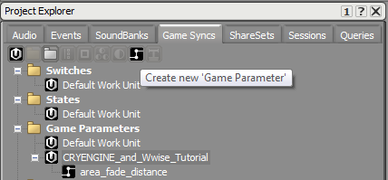
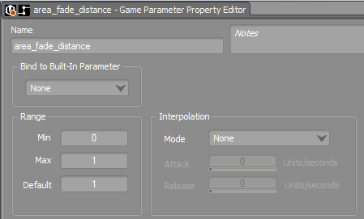
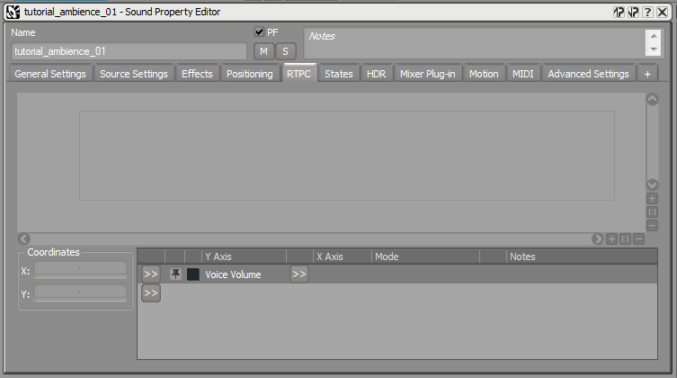
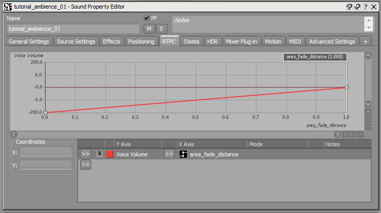
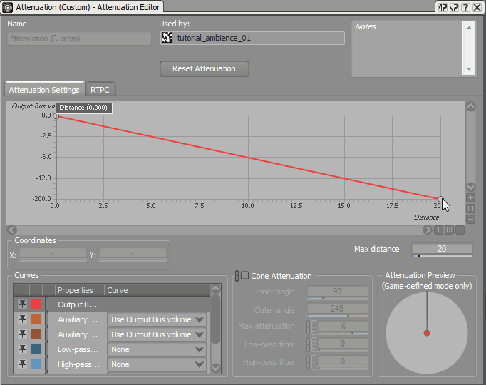

Overview
Sections
This article explains how to set up Ambient sounds in your Wwise project and CRYENGINE. CRYENGINE offers two audio entities which can be used to setup ambient sounds in your level. They are called Audio Area Ambience and Audio Area Entity, and both are attached to a shape in the level to define the area in which the sound is being played.
These entities are different from the Audio Trigger Spot, as Audio Area Ambience and Audio Area Entity do not use the standard Wwise Attenuations. Therefore, their setup in Wwise has to be different in order to create a working implementation of your audio content.
Preparing the Wwise Project to Work with Area Sounds
As initial step to setup your Wwise Project to support Ambiences in CRYENGINE, you need to go to the GameSyncs tab and create a new Game Parameter and rename it as area_fade_distance.

You can enter a desired name for the Game Parameter, and you can set the connected audio system Control with Real-Time-Parameter-Controls (RTPC) to be used on each entity.
In the example below, we have used the name area_fade_distance.
Select the newly created Game Parameter and set its range in the Property Editor from 0 to 1 (Default value =1).

This parameter will be used later-on in CRYENGINE to attenuate or increase the sound when the object is moved closer or further away from an area connected to the audio entity. Therefore, make sure to connect the newly created area_fade_distance Game Parameter to a global audio system RTPC within the Audio Controls Editor.
When you set the parameter area_fade_distance to the default value =1, you can preview your ambience in the Audio Controls Editor using the Execute Trigger functionality.
Setting up a Basic Ambient Sound Object
You need to import a *.wav file in Wwise that contains your ambient sounds and make sure that the resulting Sound Object Play Mode is set to Continuous and Loop Infinite.
After you have performed the above steps, select the sound object in Wwise and then click on the RTPC tab in the Property Editor. You can now click the 

A new
After this your setup should look like the one displayed in the screenshot below:

In the sound object's Positioning tab, create an attenuation which only affects the spread, but not the volume over distance. Similarly, the ambience spreads out completely when you are entering the area and diminishes when moving away from it.

You can create a new event for the sound object, and regenerate your SoundBanks and connect the Wwise event in the Audio Controls Editor as explained here.
For more information on how to setup your Wwise Event inside CRYENGINE, please refer to the tutorial Audio & Ambience.